Als Lehrperson auf der Sekundarstufe I unterrichtet man unterschiedliche Fächer und Niveaus. Die Unterrichtsmaterialien müssen je nach Leistungsniveau und situationsabhängigen Gegebenheiten der Klasse angepasst werden, sodass Lernerfolge gewährleistet werden können, während die Motivation der Lernenden erhalten bleibt.
OneNote
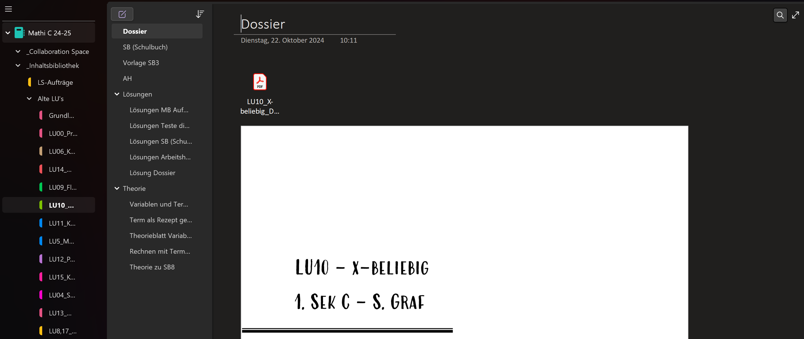
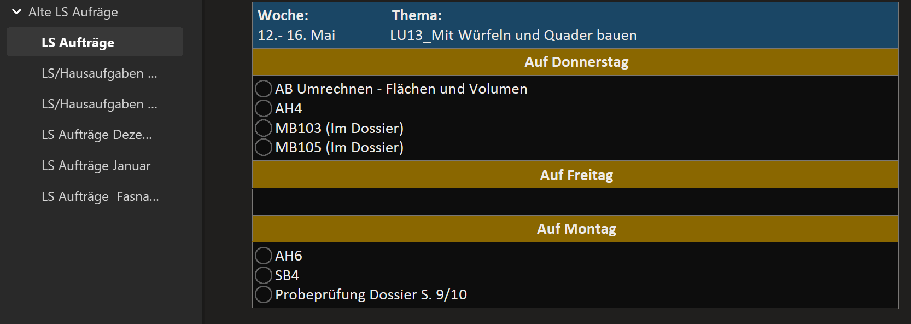
Die Lernenden erhalten pro Fach ein OneNote-Notizbuch. Dort sind alle Unterrichtsmaterialien, Aufgaben und Aufträge abgelegt. Auch die Notizen der Lehrperson werden darin festgehalten und über die digitale Wandtafel übertragen. Lehrpersonen können darauf zugreifen und direkt Rückmeldungen an die Lernenden geben.
Arbeitsblätter
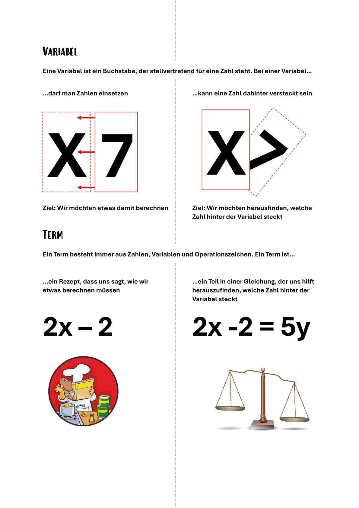
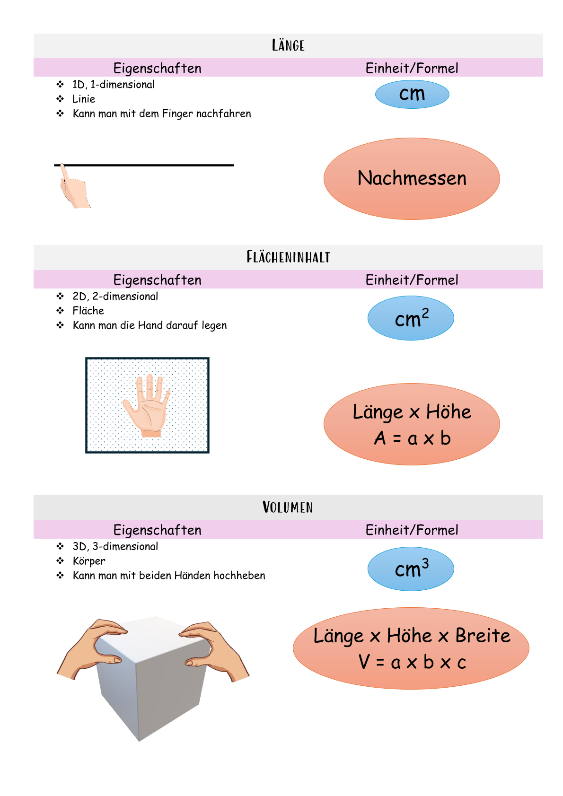
Für kognitiv schwächere Lernende sind die üblichen Lernmittel oftmals zu anspruchsvoll. Eigene Arbeitsblätter, welche stark auf eine visuelle Darstellung setzen, können das Verständnis für komplexe Inhalte verbessern.
Dossier
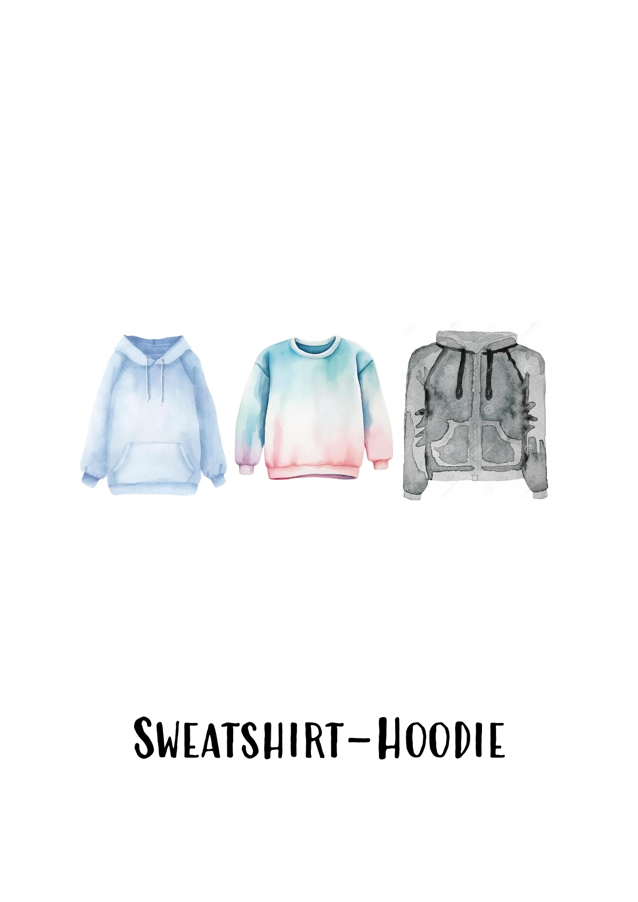
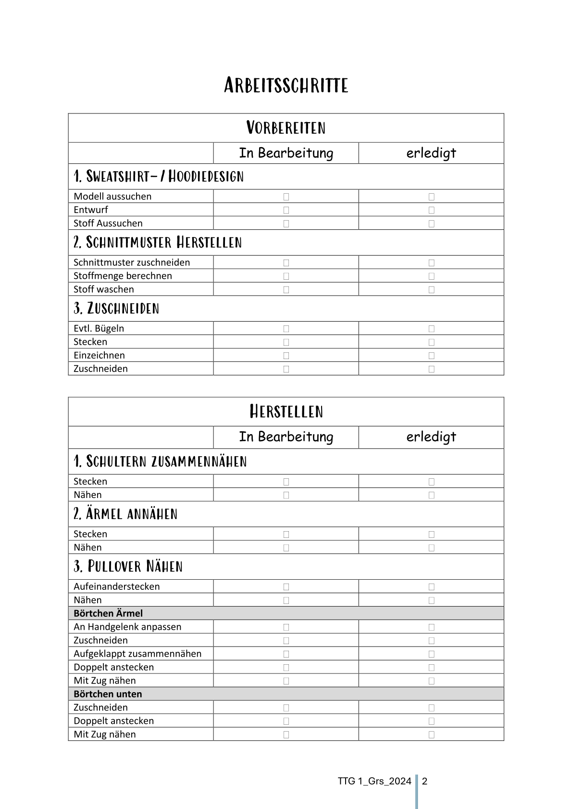
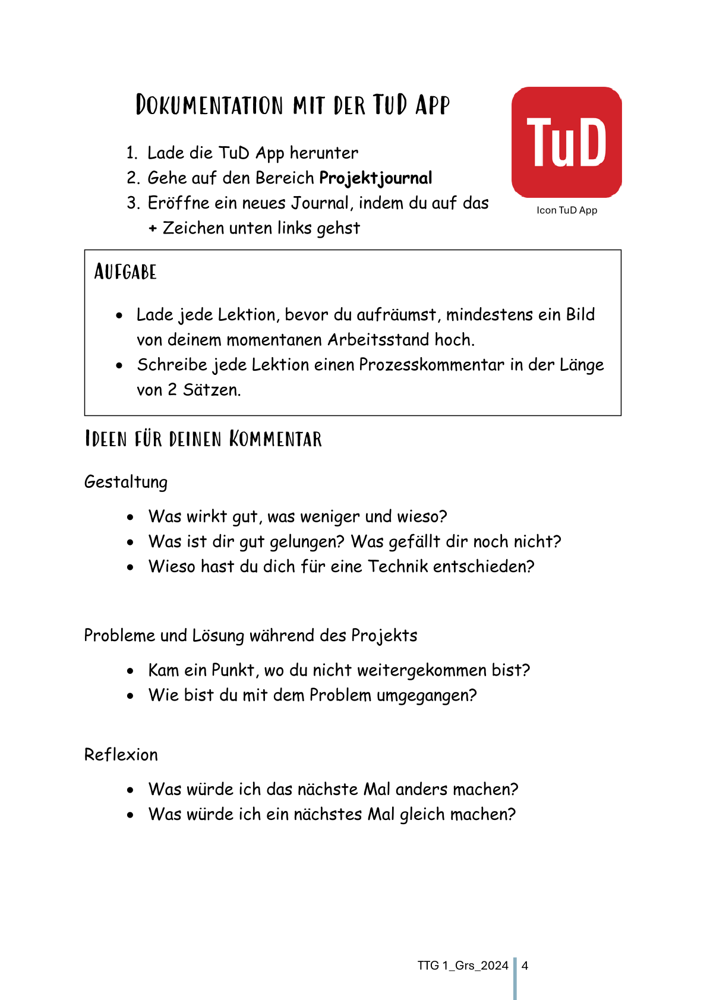
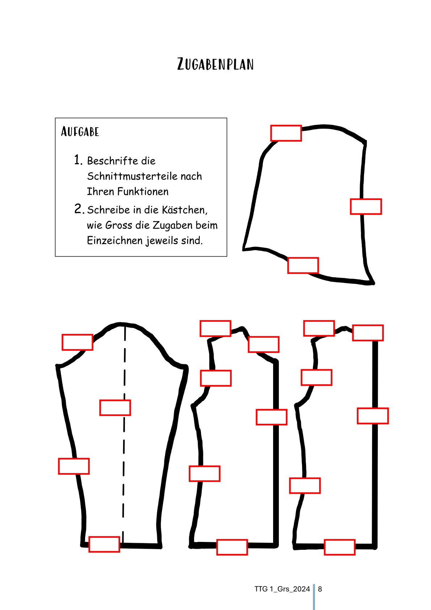
Für das Fach TTG (Technisches und Textiles Gestalten) gibt es zwar Lehrmittel, doch müssen die Materialien im Gegensatz zu anderen Fächern grösstenteils selbst zusammengesucht und erstellt werden.
Integrierte Förderung (Primar)
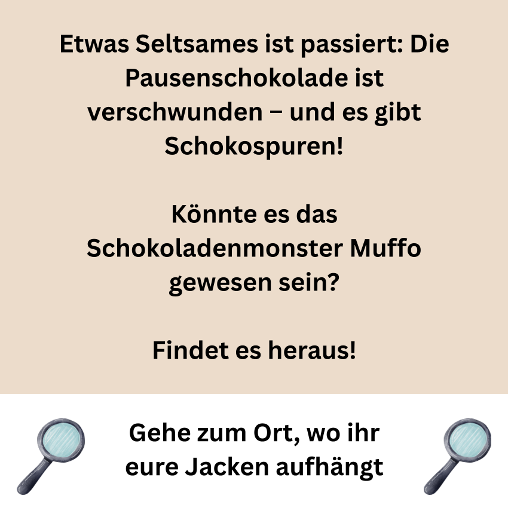
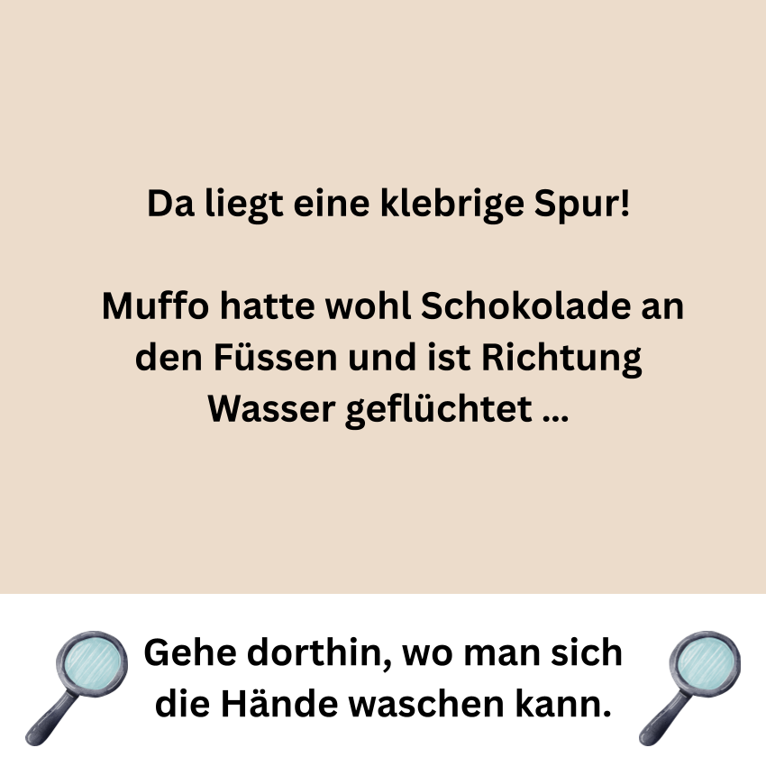
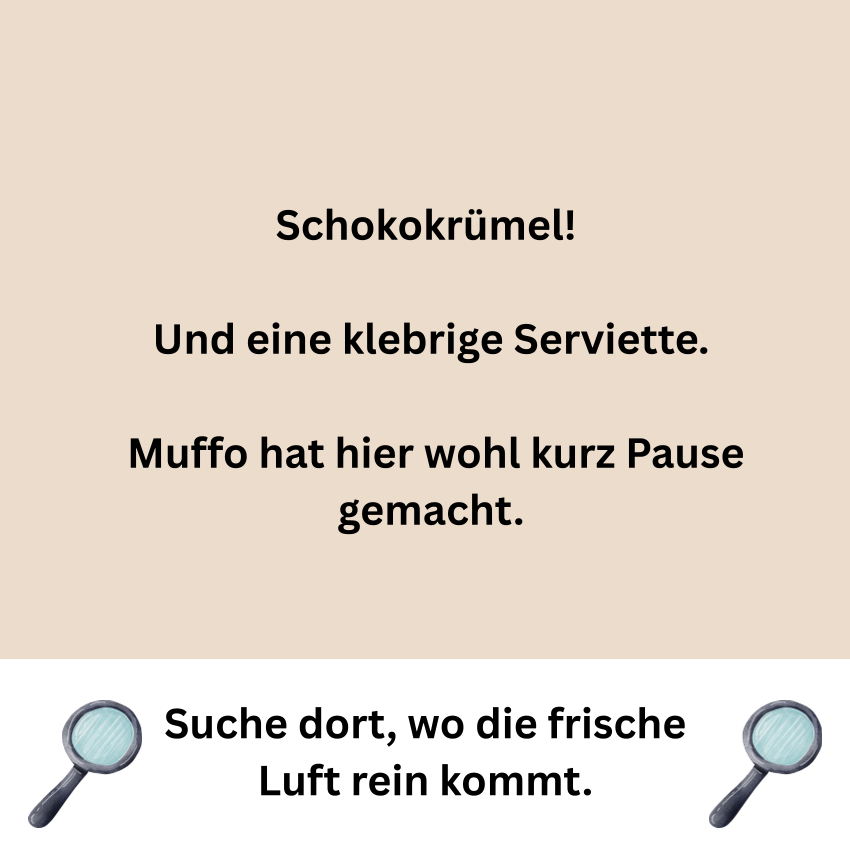
Bei Lernenden mit einer Lernschwäche, welche im Einzelsetting gefördert werden, kann es zu Frust kommen, der bis zur Arbeitsverweigerung gehen kann. Um dies zu verhindern, müssen spielerische und motivierende Wege gefunden werden, um Inhalte zu vermitteln, hier umgesetzt mittels der Leseschnitzeljagd mit Muffo dem Schokoladenmonster.